Case study 1: Constant growth with SUSTAIN Trout data
constant-growth.RmdOverview
In circumstances where the number of observations available per individual is very limited, average growth rates over time may be the only plausible model to fit. In particular, if there are individuals with only two size observations, than the best that can be done is a single estimate of growth rate based on that interval. Such a model behaves as constant growth, which we can think of as the average rate of change across the observation period and is given by where is the average growth rate. The constant growth model corresponds to linear sizes over time, and is equivalent to a linear mixed model for size, where there is an individual effect when fit to multiple individuals.
Let’s simulate some data to visualise the constant growth function.
Load dependencies
# remotes::install_github("traitecoevo/hmde")
# install.packages(c("dplyr", "ggplot2"))
library(hmde)
library(dplyr)
#>
#> Attaching package: 'dplyr'
#> The following objects are masked from 'package:stats':
#>
#> filter, lag
#> The following objects are masked from 'package:base':
#>
#> intersect, setdiff, setequal, union
library(ggplot2)Visualise data
Here are some plots to demonstrate how the constant growth function
relates to sizes over time for a single individual. Feel free to play
around with the parameter settings (beta, y_0)
and see how the plot changes.
#Simulate data
beta <- 2 #Annual growth rate
y_0 <- 1 #Starting size
time <- c(0,20)
sizes_over_time <- tibble(Y_t = 1 + beta*time, #Linear sizes over time
t = time)
#Plot of growth function
constant_growth_function <- ggplot() +
xlim(y_0, max(sizes_over_time$Y_t)) +
ylim(0, beta*2) +
labs(x = "Y(t)", y = "f", title = "Constant growth") +
theme_classic() +
theme(axis.text=element_text(size=16),
axis.title=element_text(size=18,face="bold")) +
geom_function(fun=hmde_model_des("constant_single_ind"),
args=list(pars = list(beta)),
colour="green4", linewidth=1,
xlim=c(y_0, max(sizes_over_time)))
#Sizes over time
sizes_over_time <- ggplot(data = sizes_over_time, aes(x=t, y = Y_t)) +
geom_line(colour="green4", linewidth=1) +
xlim(0, max(sizes_over_time$t)) +
ylim(0, max(sizes_over_time$Y_t)*1.05) +
labs(x = "Time", y = "Y(t)", title = "Size over time") +
theme_classic() +
theme(axis.text=element_text(size=16),
axis.title=element_text(size=18,face="bold"))
constant_growth_function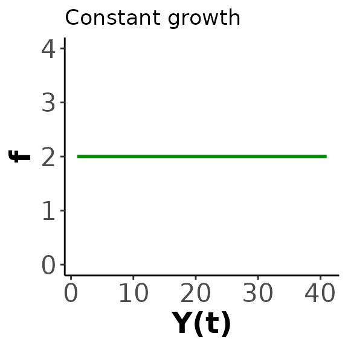
sizes_over_time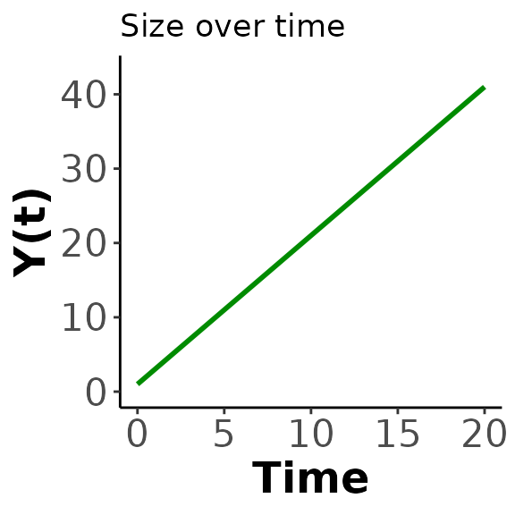
A key take-away of the function plot is the relationship to what we think of as a “reasonable growth model”. We don’t expect constant growth rates to be realistic, at best they represent the average rate of change over a period. More complex models may be more realistic, but in this case study we are only interested in different mechanisms of size dependence, we do not use environmental covariates for example.
SUSTAIN trout data
Our example data for the constant model comes from @moe2020_TroutData, a publicly available dataset
of mark-recapture data for Salmo trutta in Norway. The time
between observations is not controlled, nor is the number of
observations per individual. As a result the data consists primarily of
individuals with two observations of size, constituting a single
observation of growth which limits the growth functions that can be fit
to individuals as a single parameter model is the best that can be fit
to two sizes. The constant growth function in Equation is the most
appropriate of the functions we have in hmde, as we can
interpret the single growth interval as an estimate of the average
growth rate that gets fit to
.
In order to best reflect the survey data we took a stratified sample
of individuals grouped by the number of available observations. We have
25 fish with two observations, 15 with three, 10 with four, for a total
sample size of 50. This data is included with hmde
Trout_Size_Data
#> # A tibble: 135 × 4
#> ind_id time y_obs obs_index
#> <dbl> <dbl> <dbl> <dbl>
#> 1 1 0 52 1
#> 2 1 1.91 60 2
#> 3 1 4.02 70 3
#> 4 1 6.04 80 4
#> 5 2 0 80 1
#> 6 2 1.90 85 2
#> 7 2 3.94 93 3
#> 8 2 5.96 94 4
#> 9 3 0 52 1
#> 10 3 2.03 65 2
#> # ℹ 125 more rowsAs initial exploration we will have a look at the distribution of observed sizes, growth behaviour, and observation intervals. First we transform the data to extract growth increment and observation interval information, then plot it.
Trout_Size_Data_transformed <- Trout_Size_Data %>%
group_by(ind_id) %>%
mutate(
delta_y_obs = y_obs - lag(y_obs),
obs_interval = time - lag(time),
obs_growth_rate = delta_y_obs/obs_interval
) %>%
ungroup()
histogram_func <- function(data, var, main, xlab, ...){
ggplot2::ggplot(data = data, aes(x = {{var}})) +
geom_histogram(colour = "black", fill = "grey", ...) +
labs(title = main,
xlab = xlab) +
theme_classic()
}
histogram_func(Trout_Size_Data, y_obs,
"Observed size distribution", "Size (cm)", binwidth = 5)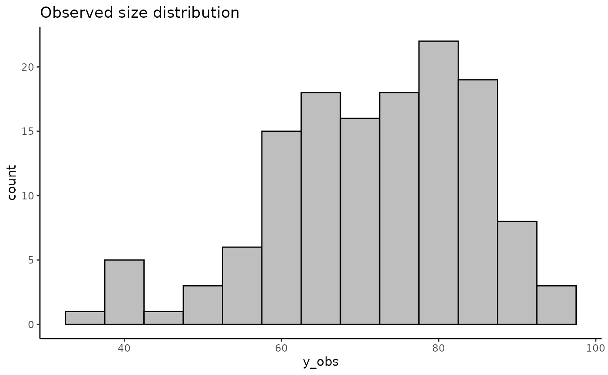
histogram_func(Trout_Size_Data_transformed, obs_interval,
"Observed interval distribution", "Time (yr)", binwidth = 0.55)
#> Warning: Removed 50 rows containing non-finite outside the scale range
#> (`stat_bin()`).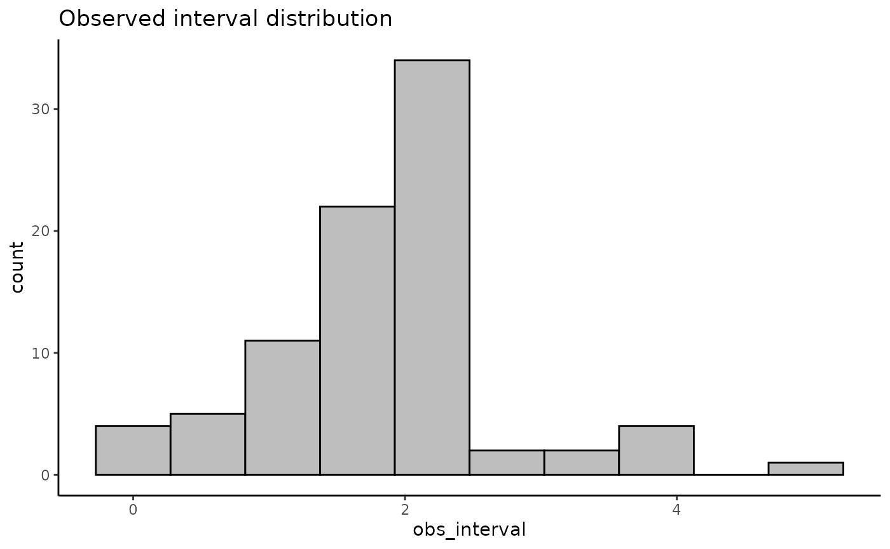
histogram_func(Trout_Size_Data_transformed, delta_y_obs,
"Observed growth increments", "Growth increment (cm)", binwidth = 5.5)
#> Warning: Removed 50 rows containing non-finite outside the scale range
#> (`stat_bin()`).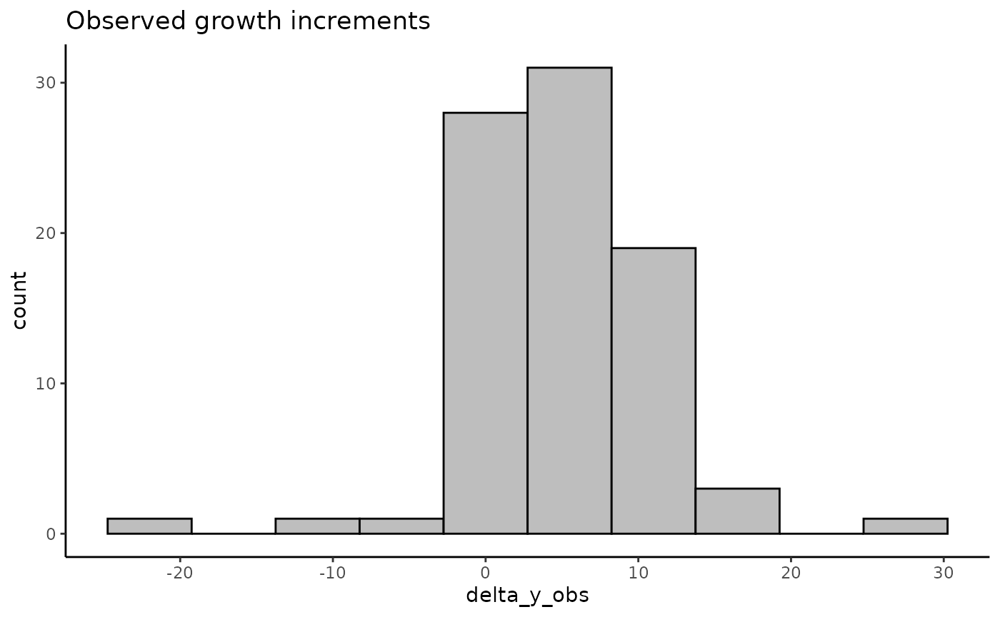
histogram_func(Trout_Size_Data_transformed, obs_growth_rate,
"Observed annualised growth rate distribution", "Growth rate (cm/yr)", binwidth = 80)
#> Warning: Removed 50 rows containing non-finite outside the scale range
#> (`stat_bin()`).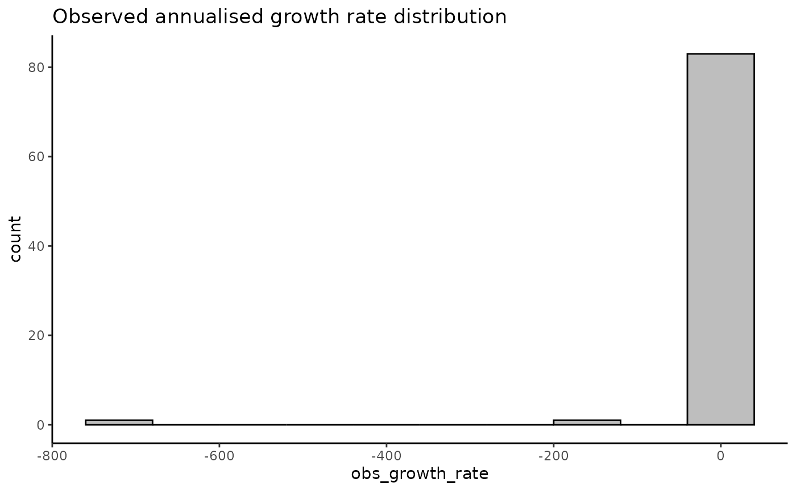
hist(Trout_Size_Data$y_obs,
main = "Observed size distribution",
xlab = "Size (cm)")
hist(Trout_Size_Data_transformed$obs_interval,
main = "Observation interval distribution",
xlab = "Time (yr)")
hist(Trout_Size_Data_transformed$delta_y_obs,
main = "Observed growth increments",
xlab = "Growth increment (cm)")
hist(Trout_Size_Data_transformed$obs_growth_rate,
main = "Observed annualised growth rate distribution",
xlab = "Growth rate (cm/yr)")The growth histograms show that there’s a number of negative growth increments, some reasonably extreme, and when combined with some short observation periods we get very extreme estimates of growth rates. We can further investigate these if needed. The constant growth model assumes non-negative growth and uses a log-normal distribution for , which will eliminate those increments from the estimated sizes. We consider eliminating negative growth biologically reasonable as we don’t expect the length of fish to decrease over time, even if their mass or width might.
Now we will actually fit the model and extract the estimates. As the provided trout data is already in the form required by the hmde_assign_data function we don’t need to do any further re-naming and can pass it directly.
trout_constant_fit <- hmde_model("constant_multi_ind") |>
hmde_assign_data(data = Trout_Size_Data) |>
hmde_run(chains = 4, cores = 1, iter = 2000)
#>
#> SAMPLING FOR MODEL 'constant_multi_ind' NOW (CHAIN 1).
#> Chain 1:
#> Chain 1: Gradient evaluation took 3.6e-05 seconds
#> Chain 1: 1000 transitions using 10 leapfrog steps per transition would take 0.36 seconds.
#> Chain 1: Adjust your expectations accordingly!
#> Chain 1:
#> Chain 1:
#> Chain 1: Iteration: 1 / 2000 [ 0%] (Warmup)
#> Chain 1: Iteration: 200 / 2000 [ 10%] (Warmup)
#> Chain 1: Iteration: 400 / 2000 [ 20%] (Warmup)
#> Chain 1: Iteration: 600 / 2000 [ 30%] (Warmup)
#> Chain 1: Iteration: 800 / 2000 [ 40%] (Warmup)
#> Chain 1: Iteration: 1000 / 2000 [ 50%] (Warmup)
#> Chain 1: Iteration: 1001 / 2000 [ 50%] (Sampling)
#> Chain 1: Iteration: 1200 / 2000 [ 60%] (Sampling)
#> Chain 1: Iteration: 1400 / 2000 [ 70%] (Sampling)
#> Chain 1: Iteration: 1600 / 2000 [ 80%] (Sampling)
#> Chain 1: Iteration: 1800 / 2000 [ 90%] (Sampling)
#> Chain 1: Iteration: 2000 / 2000 [100%] (Sampling)
#> Chain 1:
#> Chain 1: Elapsed Time: 0.88 seconds (Warm-up)
#> Chain 1: 0.476 seconds (Sampling)
#> Chain 1: 1.356 seconds (Total)
#> Chain 1:
#>
#> SAMPLING FOR MODEL 'constant_multi_ind' NOW (CHAIN 2).
#> Chain 2:
#> Chain 2: Gradient evaluation took 2.8e-05 seconds
#> Chain 2: 1000 transitions using 10 leapfrog steps per transition would take 0.28 seconds.
#> Chain 2: Adjust your expectations accordingly!
#> Chain 2:
#> Chain 2:
#> Chain 2: Iteration: 1 / 2000 [ 0%] (Warmup)
#> Chain 2: Iteration: 200 / 2000 [ 10%] (Warmup)
#> Chain 2: Iteration: 400 / 2000 [ 20%] (Warmup)
#> Chain 2: Iteration: 600 / 2000 [ 30%] (Warmup)
#> Chain 2: Iteration: 800 / 2000 [ 40%] (Warmup)
#> Chain 2: Iteration: 1000 / 2000 [ 50%] (Warmup)
#> Chain 2: Iteration: 1001 / 2000 [ 50%] (Sampling)
#> Chain 2: Iteration: 1200 / 2000 [ 60%] (Sampling)
#> Chain 2: Iteration: 1400 / 2000 [ 70%] (Sampling)
#> Chain 2: Iteration: 1600 / 2000 [ 80%] (Sampling)
#> Chain 2: Iteration: 1800 / 2000 [ 90%] (Sampling)
#> Chain 2: Iteration: 2000 / 2000 [100%] (Sampling)
#> Chain 2:
#> Chain 2: Elapsed Time: 0.833 seconds (Warm-up)
#> Chain 2: 0.426 seconds (Sampling)
#> Chain 2: 1.259 seconds (Total)
#> Chain 2:
#>
#> SAMPLING FOR MODEL 'constant_multi_ind' NOW (CHAIN 3).
#> Chain 3:
#> Chain 3: Gradient evaluation took 2.8e-05 seconds
#> Chain 3: 1000 transitions using 10 leapfrog steps per transition would take 0.28 seconds.
#> Chain 3: Adjust your expectations accordingly!
#> Chain 3:
#> Chain 3:
#> Chain 3: Iteration: 1 / 2000 [ 0%] (Warmup)
#> Chain 3: Iteration: 200 / 2000 [ 10%] (Warmup)
#> Chain 3: Iteration: 400 / 2000 [ 20%] (Warmup)
#> Chain 3: Iteration: 600 / 2000 [ 30%] (Warmup)
#> Chain 3: Iteration: 800 / 2000 [ 40%] (Warmup)
#> Chain 3: Iteration: 1000 / 2000 [ 50%] (Warmup)
#> Chain 3: Iteration: 1001 / 2000 [ 50%] (Sampling)
#> Chain 3: Iteration: 1200 / 2000 [ 60%] (Sampling)
#> Chain 3: Iteration: 1400 / 2000 [ 70%] (Sampling)
#> Chain 3: Iteration: 1600 / 2000 [ 80%] (Sampling)
#> Chain 3: Iteration: 1800 / 2000 [ 90%] (Sampling)
#> Chain 3: Iteration: 2000 / 2000 [100%] (Sampling)
#> Chain 3:
#> Chain 3: Elapsed Time: 0.979 seconds (Warm-up)
#> Chain 3: 0.437 seconds (Sampling)
#> Chain 3: 1.416 seconds (Total)
#> Chain 3:
#>
#> SAMPLING FOR MODEL 'constant_multi_ind' NOW (CHAIN 4).
#> Chain 4:
#> Chain 4: Gradient evaluation took 2.9e-05 seconds
#> Chain 4: 1000 transitions using 10 leapfrog steps per transition would take 0.29 seconds.
#> Chain 4: Adjust your expectations accordingly!
#> Chain 4:
#> Chain 4:
#> Chain 4: Iteration: 1 / 2000 [ 0%] (Warmup)
#> Chain 4: Iteration: 200 / 2000 [ 10%] (Warmup)
#> Chain 4: Iteration: 400 / 2000 [ 20%] (Warmup)
#> Chain 4: Iteration: 600 / 2000 [ 30%] (Warmup)
#> Chain 4: Iteration: 800 / 2000 [ 40%] (Warmup)
#> Chain 4: Iteration: 1000 / 2000 [ 50%] (Warmup)
#> Chain 4: Iteration: 1001 / 2000 [ 50%] (Sampling)
#> Chain 4: Iteration: 1200 / 2000 [ 60%] (Sampling)
#> Chain 4: Iteration: 1400 / 2000 [ 70%] (Sampling)
#> Chain 4: Iteration: 1600 / 2000 [ 80%] (Sampling)
#> Chain 4: Iteration: 1800 / 2000 [ 90%] (Sampling)
#> Chain 4: Iteration: 2000 / 2000 [100%] (Sampling)
#> Chain 4:
#> Chain 4: Elapsed Time: 0.9 seconds (Warm-up)
#> Chain 4: 0.43 seconds (Sampling)
#> Chain 4: 1.33 seconds (Total)
#> Chain 4:
trout_constant_estimates <- hmde_extract_estimates(model = "constant_multi_ind",
fit = trout_constant_fit,
input_measurement_data = Trout_Size_Data)At the level of sizes over time we can have a look at the distribution of estimated sizes, estimated growth increments, and annualised growth rates. The negative increments are gone without actually removing those from the data set.
measurement_data_transformed <- trout_constant_estimates$measurement_data %>%
group_by(ind_id) %>%
mutate(
delta_y_obs = y_obs - lag(y_obs),
obs_interval = time - lag(time),
obs_growth_rate = delta_y_obs/obs_interval,
delta_y_est = y_hat - lag(y_hat),
est_growth_rate = delta_y_est/obs_interval
) %>%
ungroup()
hist(measurement_data_transformed$y_hat,
main = "Estimated size distribution",
xlab = "Size (cm)")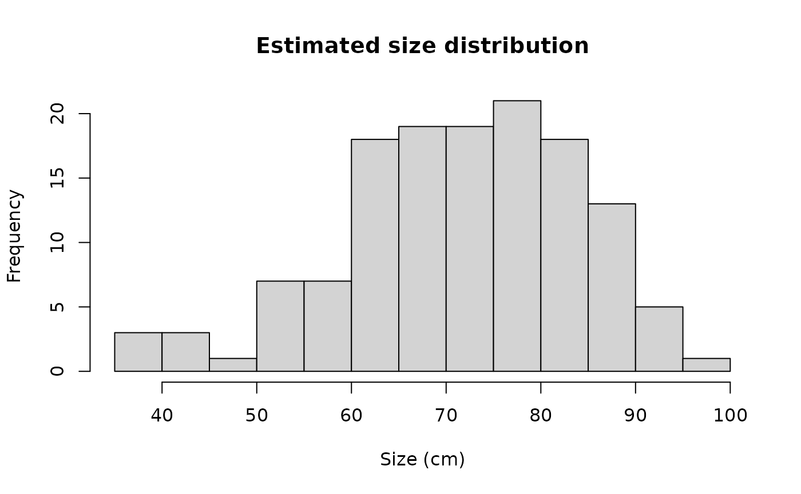
hist(measurement_data_transformed$delta_y_est,
main = "Estimated growth increments",
xlab = "Growth increment (cm)")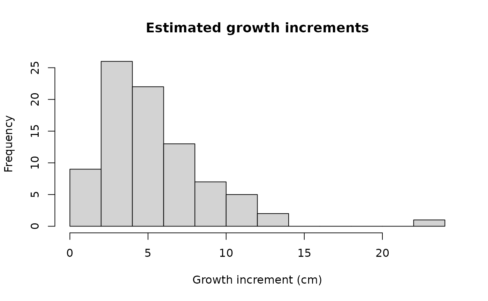
hist(measurement_data_transformed$est_growth_rate,
main = "Estimated annualised growth rate distribution",
xlab = "Growth rate (cm/yr)")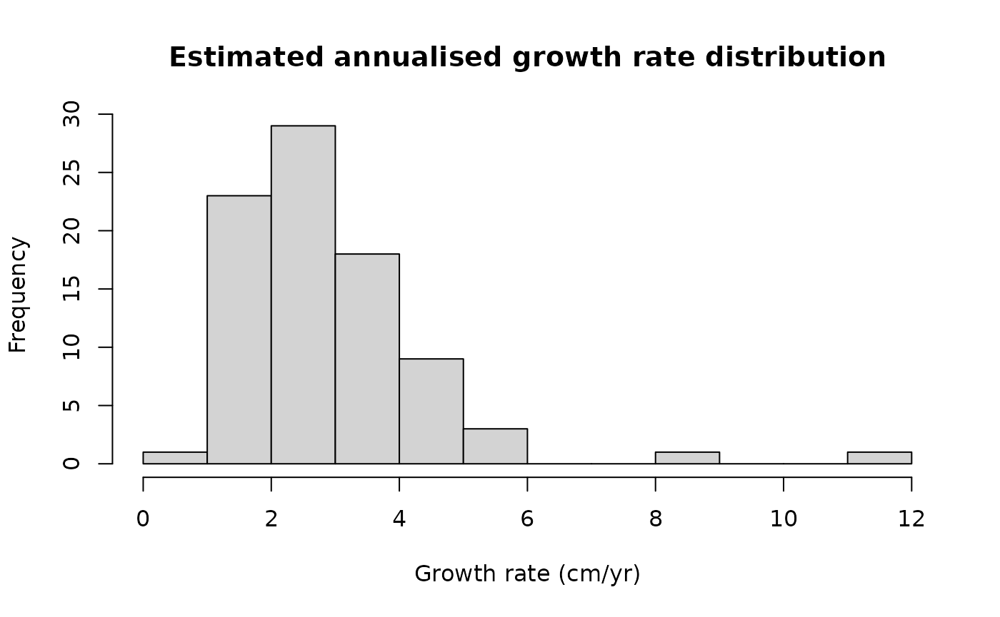 We can also directly compare the observed sizes over time to estimated values. Quantitatively we can use statistics such as calculated on , and qualitatively we can look at plots of sizes over time. We look at 5 individuals to start with because the joint plot of sizes over time can get very messy very fast.
#Quantitative R^2
cor(measurement_data_transformed$y_obs, measurement_data_transformed$y_hat)^2
#> [1] 0.9643358
#Plots of size over time for a sample of 5 individuals
sample_ids <- sample(1:nrow(trout_constant_estimates$individual_data), size=5)
plot_data <- measurement_data_transformed %>%
filter(ind_id %in% sample_ids)
ggplot(data=plot_data, aes(group = ind_id)) +
geom_point(aes(x = time, y=y_obs, colour = as.factor(ind_id)),
shape = 1) +
geom_line(aes(x = time, y=y_obs, colour = as.factor(ind_id)),
linetype = "dashed") +
geom_point(aes(x = time, y=y_hat, colour = as.factor(ind_id)),
shape = 2) +
geom_line(aes(x = time, y=y_hat, colour = as.factor(ind_id)),
linetype = "solid") +
labs(x="Time (years)", y="Size (cm)", colour="Ind. ID") +
theme_classic()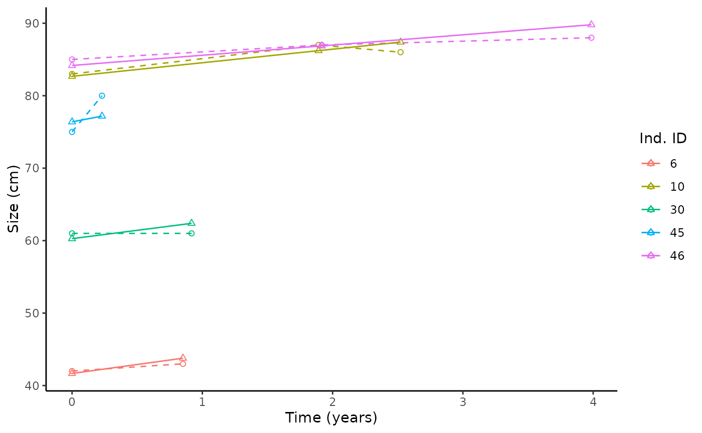
At the level of individuals we are interested in the distribution of estimates, which will align with the estimated annualised growth rates as that’s precisely what they represent. We also provide an easy way to produce a plot of the fitted growth functions in order to see how they compare to the observed sizes.
hist(trout_constant_estimates$individual_data$ind_beta_mean,
main = "Individual beta parameters",
xlab = "beta estimate")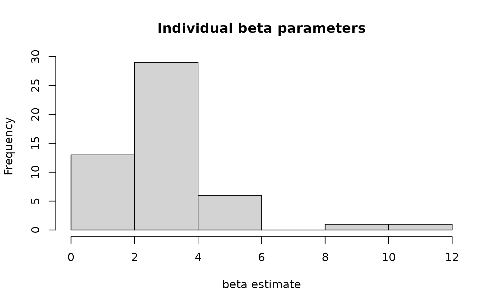
hmde_plot_de_pieces(model = "constant_multi_ind",
individual_data = trout_constant_estimates$individual_data,
measurement_data = trout_constant_estimates$measurement_data)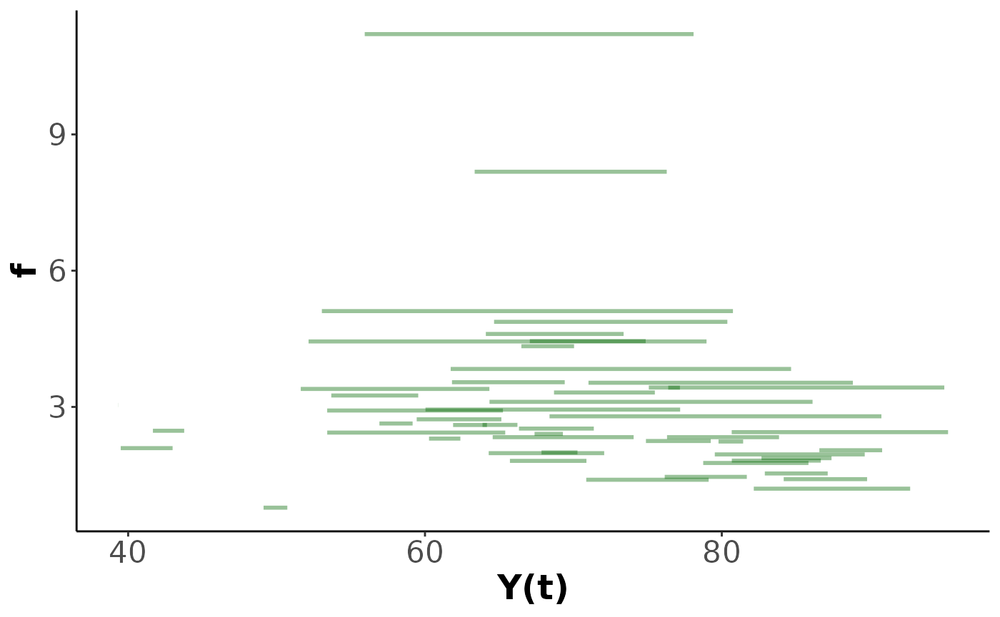
We also get estimates of the population-level hyper-parameters that govern the distribution of – and for the log-normal distribution. These are calculated in the context of the log-transformed parameters so the easiest way to interpret is to back-transform it through exponentiation, but this does not so easily transfer to . The CIs in this output are posterior credible intervals taken as the central 95% quantiles of the posterior samples.
#Mean of normal distribution
trout_constant_estimates$population_data$mean[1] #Raw value
#> [1] 0.8831287
print(paste0("95% CI for mean log growth: (",
trout_constant_estimates$population_data$CI_lower[1], " , ",
trout_constant_estimates$population_data$CI_upper[1], ")")) #Raw CI
#> [1] "95% CI for mean log growth: (0.611609004722177 , 1.11529701717596)"
exp(trout_constant_estimates$population_data$mean[1]) #In cm/yr units
#> [1] 2.418455
print(paste0("95% CI for mean growth in cm/yr: (",
exp(trout_constant_estimates$population_data$CI_lower[1]), " , ",
exp(trout_constant_estimates$population_data$CI_upper[1]), ")"))
#> [1] "95% CI for mean growth in cm/yr: (1.84339504521429 , 3.05047408783971)"
#Standard deviation of underlying normal distribution
trout_constant_estimates$population_data$mean[2]
#> [1] 0.6523952
print(paste0("95% CI for log growth standard deviation: (",
trout_constant_estimates$population_data$CI_lower[2], " , ",
trout_constant_estimates$population_data$CI_upper[2], ")")) #Raw CI
#> [1] "95% CI for log growth standard deviation: (0.452930954169368 , 0.914662916987112)"From the species-level data we can say that the average annual growth rate for the species is estimated to be 2.4cm/yr, with a 95% posterior CI of (1.83, 3.04). As we fit a constant growth model there’s only so much we can say about the growth behaviour.